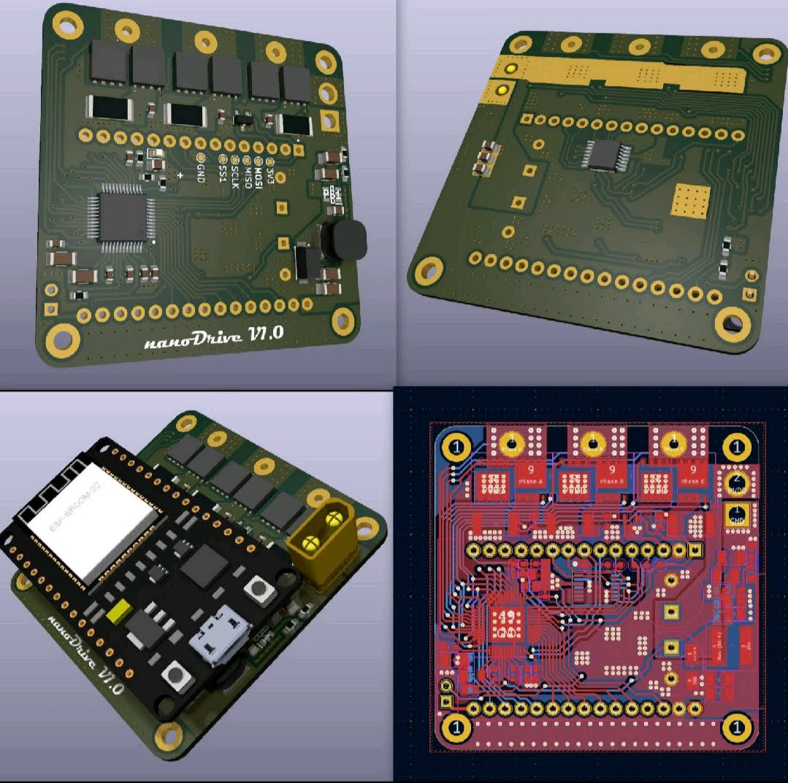
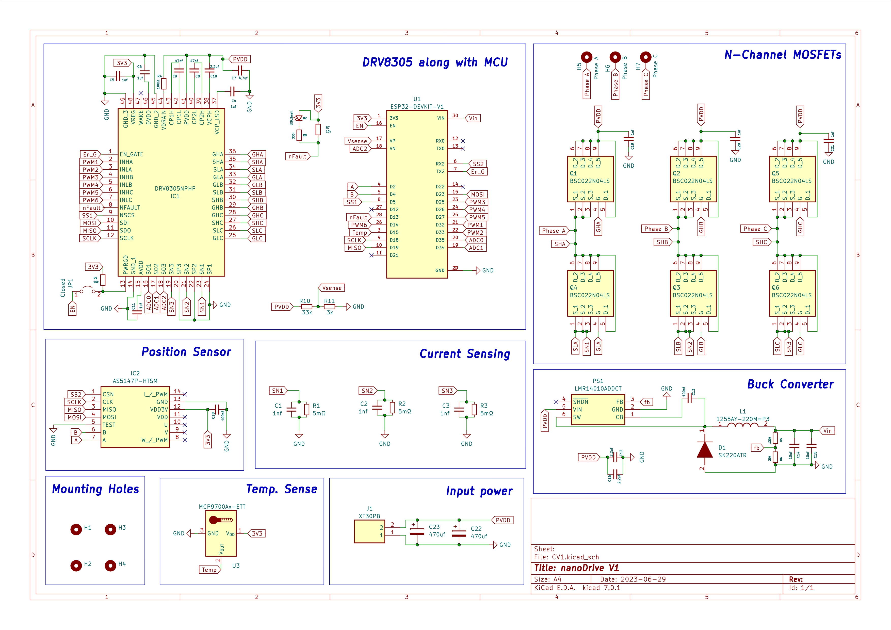

nanoDriveV1.0 - BLDC motor driver with F.O.C.
Following my graduation, I persisted in enhancing my graduation project—a prototype board for BLDC Control utilizing the F.O.C. algorithm. The current version has undergone significant optimization, adhering to PCB design rules.
The microcontroller unit now integrates an ESP32 Dev Kit with an onboard absolute encoder for improved functionality. This design is 52 mm x 52 mm in size, making it easy to work with many BLDC motors. It can handle up to 40 Volts and a continuous current of 10A, which is good for different uses.P.C.B. layout & 3D C.A.D. of nanoDriveV1.0

Schematic of nanoDriveV1.0
The schematic includes different parts of the circuit, like the DRV8305 motor driver I.C. with the MCU, N-Channel MOSFETs, a Position Sensor, circuitry for Low Side current sensing, a Buck converter, and a Temperature sensor. These sections work together to make the whole system.
The encoder utilizes a diametric magnet with a diameter of 6mm and a height of 3mm. This magnet needs to be mounted on the rotor shaft part of the BLDC for proper functionality.Fabrication of nanoDriveV1.0
I created the PCB layout using kiCad and sent it for fabrication. After a week, it arrived with a stencil for manual component placement. I carefully assembled the PCB, testing each component to ensure proper soldering. Once the initial test was successful, I powered up the board, gradually increasing the voltage to Vmax. Everything worked well.
Open Loop Configuration Test
Afterwards, I designed and 3D printed a mount for the motor driver and BLDC motor. I conducted calibration sequences and open-loop configuration tests. Currently, the project is in the development phase, and my plan is to showcase its capabilities by implementing it in complex projects such as a 3-DOF Stewart Platform, Inverted Pendulum, Balancing Robot, and many more.
Open Loop VS Closed Loop Velocity Control Test
I've finally started tinkering with nanoDrive V1.0. Just tested out Open and Closed Loop Velocity control, and let me tell you, the difference is pretty impressive!
In progress 🔄